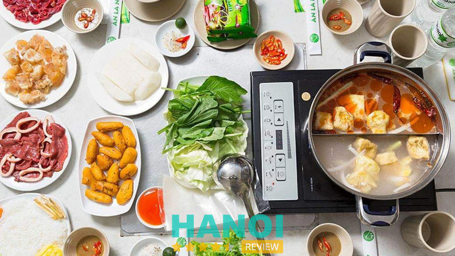
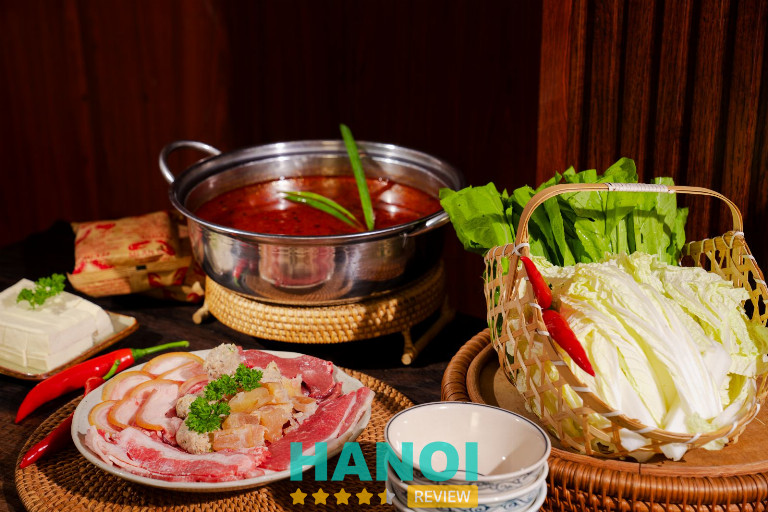
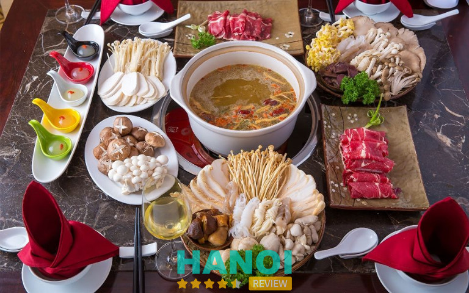
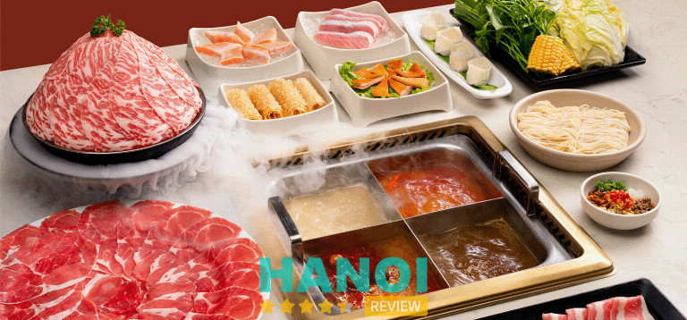
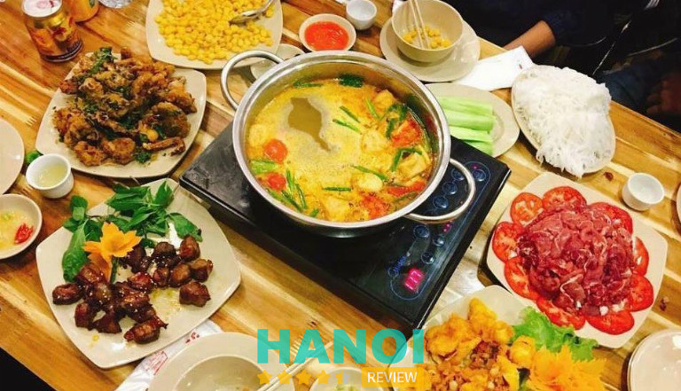
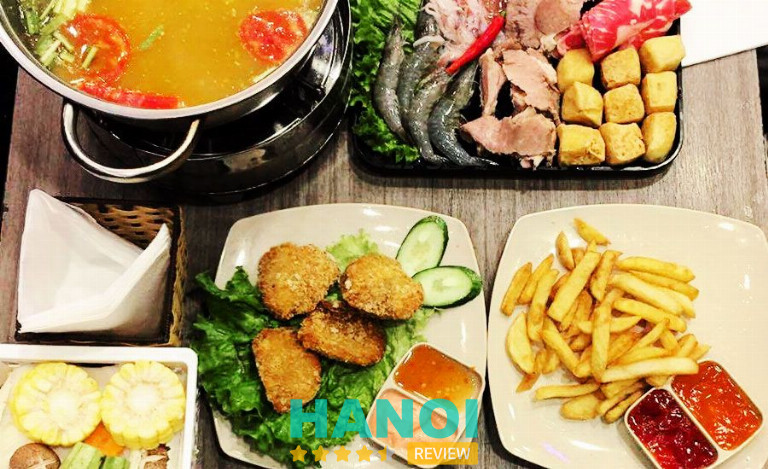
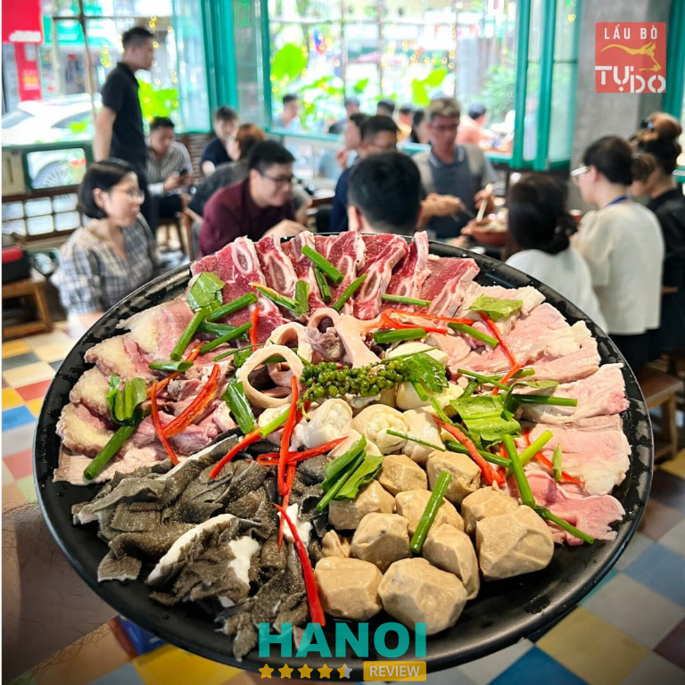
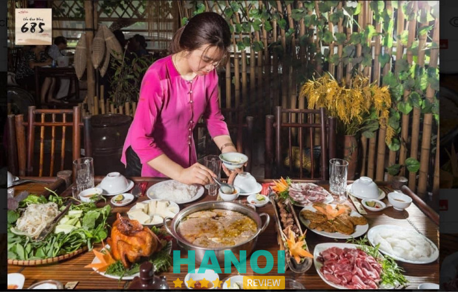
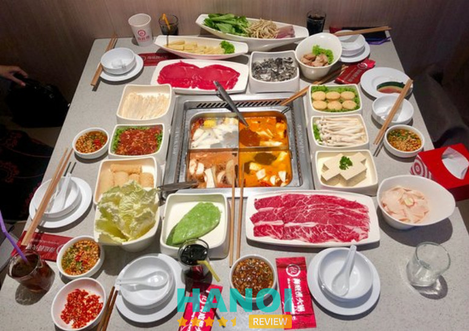
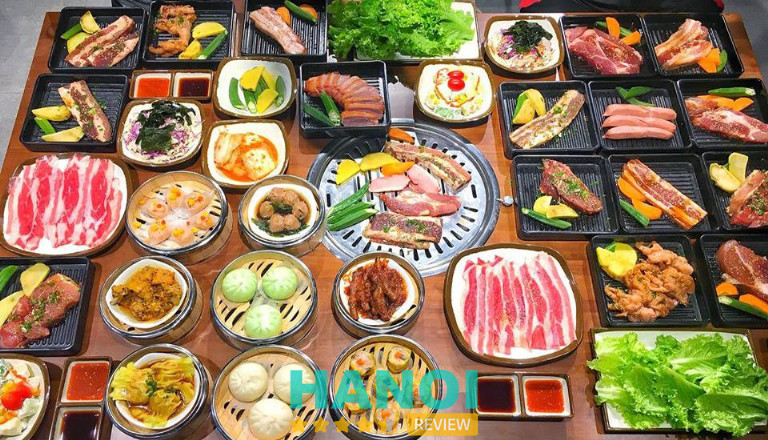

10 Quán lẩu tại Hà Nội giá rẻ, ngon bất bại cho giới sành ăn
Các quán lẩu tại Hà Nội dường như đã trở thành một nét ẩm thực đặc trưng của thủ đô. Đến đây bạn vừa được thưởng thức món ngon lại vừa có cơ hội khám phá thành phố với nét đẹp cổ kính, hoài niệm nhưng không kém phần hiện đại.
Top 10 Quán lẩu tại Hà Nội ngon, đúng vị.
Lẩu không những là một món dễ ăn, giúp bổ sung nhiều chất dinh dưỡng mà còn là món ăn giúp mọi người cùng quây quần bên nhau để thưởng thức hổ trợ gắn kết tình cảm trở nên thân thiết hơn. Vì vậy, nếu bạn đang có nhu cầu tìm kiếm các quán lẩu tại Hà Nội thì HaNoiReview sẽ giúp bạn thông qua bài viết dưới đây.
Lẩu Bò nhúng dấm 555
Mọi người dân tại Hà Nội chắc hẳn không còn xa lạ gì với nhà hàng Lẩu Bò nhúng dấm 555, tại đây luôn nổi tiếng với những món từ thịt bò. Với lợi thế có nhiều chi nhánh trên địa bàn Hà Nội, nên sẽ thuận tiện giúp bạn trong việc di chuyển từ nơi ở đến khu vực nhà hàng gần nhất.

Sở hữu không gian rộng rãi và thoáng mát, nhà hàng luôn là sự lựa chọn hàng đầu đối với khách hàng có các buổi ăn thân mật cùng gia đình và bạn bè. Bên cạnh đó, một trong những điều giúp nhà hàng nổi tiếng đó chính là nước lẫu với công thức được chế biến đặc biệt bởi các đầu bếp với nhiều năm kinh nghiệm tại đây nghiên cứu và sáng tạo nên.
Các nguyên liệu tại nhà hàng đặc biệt là rau nhúng ăn kèm với lẩu được lựa chọn kỹ càng, nguồn gốc rõ ràng và đảm bảo an toàn thực phẩm. Thêm vào đó là đội ngũ nhân viên vô cùng nhiệt tình, hổ trợ khách hàng nhanh chóng chính là những lý do giúp nhà hàng có được vị thế của mình như ngày hôm nay.
Và đặc biệt, nhà hàng có hệ thống hút mùi giúp không gian nhà hàng luôn thoáng mát và bảo vệ quần áo của khách hàng tránh được mùi đồ ăn, từ đó giúp khách hàng có những trải nghiệm trọn vẹn nhất khi sử dụng dịch vụ tại nhà hàng.
Thông tin liên hệ:
- Địa chỉ: Số 106 ngõ 12 Núi Trúc, Ba Đình, Hà Nội.
- Điện thoại: 1900 599 955
- Fanpage: facebook.com/BoNgon555AnLaNgam
- Website: http://555anlangam.vn/
Lẩu Bò Ngon – Bò Tơ Quán Mộc
Bò Tơ Quán Mộc chắc chắn sẽ là địa điểm bạn không thể bỏ lỡ khi muốn khám phá các quán lẩu tại Hà Nội. Nhà hàng luôn nhận được sự yêu mến từ khách hàng, bởi các món ăn tại đây đều được chế biến từ thịt bò tơ thượng hạng và chất lượng.

Nổi bật với màu vàng chủ đạo bắt mắt, giúp khách hàng dễ dàng nhận biết được Bò tơ Quán Mộc. Bò tơ tại nhà hàng là loại thịt thượng hạng sau khi chế biến vẫn giữ được chất dinh dưỡng và độ tươi ngon.
Đến với nhà hàng Bò tơ Quán Mộc bạn sẽ được thưởng thức các món ăn với công thức được chế biến đa dạng. Thêm vào đó là bàn tay điệu nghệ của những đầu bếp đầy kinh nghiệm đã nên những món ăn hài lòng khách hàng.
Thông tin liên hệ:
- Địa chỉ: Số 2 Hoa Lư, Hai Bà Trưng, Hà Nội.
- Điện thoại: 094 581 3355
- Fanpage: facebook.com/BoToQuanMoc
- Website: botoquanmoc.com
Lẫu Nấm Ashima
Lẫu Nấm Ashima sẽ là một trong những lựa chọn đáng tin cậy với những tín đồ thích lẫu nấm. Đến đây chắc chắn bạn sẽ bị mê hoặc bởi hương vị thanh ngọt hòa quyện với hương thơm tự nhiên của nấm.

Với hơn 20 loại nấm tươi bổ dưỡng và quý hiếm, nên các món ăn tại đây đa phần đều được chế biến từ nấm và được chế biến với mùi thơm đặc trưng. Hiểu được sức khỏe chiếm một vị trí quan trọng trong cuộc sống hiện nay, nên nấm tại nhà hàng là nấm tươi được hái về và được chuyển vào kho lạnh để bảo quản.
Nhà hàng luôn nổi tiếng bởi hương thơm đặc trưng từ nồi lẫu lan tỏa tạo cảm giác muốn thưởng thức ngay lập tức. Đặc biệt, nước lẩu tại nhà hàng được các đầu bếp áp dụng công thức đặc biệt, hầm liên tục trong 2 ngày từ các loại thuốc bắc và nấm nên có hương vị đậm đà và vô cùng đầy đủ chất dinh dưỡng.
Khi đến đây khách hàng sẽ được thưởng thức 4 loại nước dùng từ món lẩu nấm thiên nhiên đầy bổ dưỡng đó là nước dùng nấm chay, nước dùng nấm cay, nước dùng nấm đặc biệt và nước dùng nấm bổ dưỡng.
Thông tin liên hệ:
- Địa chỉ: 60 Giang Văn Minh, Kim Mã, Ba Đình, Hà Nội.
- Điện thoại: 024 7300 7317
- Fanpage: facebook.com/BoNgon555AnLaNgam/
- Website: 555anlangam.vn
Manwah – Taiwanese Hotpot
Nếu bạn là một người đam mê ẩm thực Đài Loan, thì Manwah chắc chắn sẽ là cái tên không thể thiếu khi nhắc về lẩu. Đến với Manwah, bạn sẽ được thưởng thức 5 vị nước lẩu có vị ngọt tự nhiên được hầm cùng các loại gia vị đặc trưng.

Các nguyên liệu dùng để nhúng vào nước lẩu đều được đảm bảo tươi ngon và chất lượng. Bên cạnh đó, khi đến đây thưởng thức khách hàng có thể thử sức sáng tạo tự pha chế nước chấm theo sở thích cá nhân.
Manwah được thiết kế với màu nâu nhã nhặn tạo cảm giác mới mẻ đến khách hàng, thêm vào đó bàn ăn tại đây được thiết kế có một vách ngăn làm bằng gỗ để giúp khách hàng trở nên thoải mái cũng như không gian riêng tư.
Một trong những điều khiến khách hàng luôn tin tưởng lựa chọn Manwah có lẽ là sự đặc sắc của nước lẩu, bởi tại đây nước dùng được hầm kết hợp cùng các gia vị đặc trưng của xứ Đài tạo nên cảm giác khó quên.
Thông tin liên hệ:
- Địa chỉ: Tầng 1, TTTM Hồ Gươm, Mỗ Lao, Hà Đông, Hà Nội.
- Điện thoại: 024 7300 8021
Lẩu Đức Trọc
Với những tín đồ yêu thích ẩm thực Việt, thì Lẩu Đức Trọc chắc hẳn là cái tên rất thân quen. Đây được xem là địa chỉ đáng tin cậy khi nhắc về các quán lẩu tại Hà Nội.

Khách hàng đến đây đa phần đều sẽ muốn dùng món lẩu ếch – một trong những món ăn làm nên tên tuổi của nhà hàng. Thịt ếch tại đây đều được chọn lọc kỹ càng nên rất săn chắc và tươi ngon. Trước khi khách hàng thả thịt ếch vào lẩu, thì trước đó thịt ếch đã được xào sơ qua với các loại gia vị đặc trưng để khử đi mùi tanh và giúp miếng thịt ngon đậm vị hơn.
Một trong những điều giúp khách hàng luôn chọn quay lại Lẩu Ếch Trọc, đó là nước lẩu tại đây được cái đầu bếp nêm nếm rất vừa vị, bên cạnh đó là sự kết hợp với các nhóm topping đa dạng.
Thông tin liên hệ:
- Địa chỉ: 61 Ngõ 298 Tây Sơn, Đống Đa, Hà Nội.
- Điện thoại: 0941409999
Food Center
Nếu bạn là tín đồ của ẩm thực Thái Lan, thì Food Center chắc chắn sẽ là một cái tên không thể thiếu. Với lợi thế sở hữu nhiều chi nhánh tại Hà Nội, nên Food Center dễ dàng được khách hàng tìm kiếm và nhận biết.

Đến với Food Center bạn chắc chắn phải thử món lẩu Thái 9 tầng mây, ngay từ tên gọi đã kích thích sự tò mò lẫn thích thú đến khách hàng. Sở dĩ có tên gọi như vậy là bởi vì khi tháp đồ nhúng được bưng ra với 9 tầng lần lượt từ các món như thịt gà, bò, nấm… Bên cạnh đó, cách phục vụ của món ăn cũng chính là điểm nhấn khi nước lẩu tại đây được hầm trong nhiều giờ, thêm vào đó sẽ được kết hợp nhiều loại gia vị đặc trưng để tạo nên hương vị riêng biệt không nhầm lẫn ở đâu được, đó chính là nét đặc trưng của món ăn này mà bạn nên thử.
Với đội ngũ nhân viên chuyên nghiệp và nhiệt tình, thêm vào đó nhà hàng có không gian hiện đại và thoáng đãng đi kè với gam màu sáng kết hợp với ánh đèn. Cũng chính là những yếu tố giúp nhà hàng ghi điểm với thực khách.
Thông tin liên hệ
- Địa chỉ: 227 Tô Hiệu, Cầu Giấy, Hà Nội.
- Điện thoại: 035 623 3885
Lẩu Bò Tự Do
Nếu bạn đang tìm một nhà hàng có menu đa dạng với những món đặc trưng thì Lẩu Bò Tự Do sẽ là một sự lựa chọn hoàn hảo. Những món ăn mang hương vị đặc trưng từ thịt bò đã làm nên ấn tượng khó phai khi ghé chân tại đây.

Tại Lẩu Bò Tự Do có nhiều món ăn đặc sắc như gầu bò, bò viên, cuống tim, tiết luộc, u bò…Thịt bò tại đây được hầm chín và đậm vị từ sự kết hợp với các nguyên liệu. Thêm vào đó là nước chấm chao đậm đà, tạo nên một cảm giác phấn khởi khi sử dụng.
Đến đây bạn nên thưởng thức món lẩu bò niêu đất. Một trong những nét đặc sắc của món ăn này chính là lẩu bò được phục vụ trong niêu đất nấu trực tiếp trên bếp lửa than. Do đó, thịt bò trong lẩu rất mềm ngọt và lúc nào cũng nóng sốt.
Thông tin liên hệ:
- Địa chỉ: 58 Khúc Thừa Dụ, Cầu Giấy, Hà Nội.
- Điện thoại: 0866991986
Lẩu Cua Đồng Song Hà
Lẩu Cua Đồng Song Hà chắc hẳn không còn là cái tên quá xa lạ đối với các tín đồ thích lẩu tại Hà Nội. Với thiết kế kiến trúc thôn quê, nhà hàng dễ dàng ghi điểm với khách hàng bởi sự gần gũi.

Sở hữu đội ngũ nhân viên làm việc chuyên nghiệp và tận tình, thêm vào đó đầu bếp tại nhà hàng đều là những người có nhiều năm kinh nghiệm trong việc chế biến các món về lẩu. Thêm vào đó, cua đồng tại đây được chế biến từ cua tươi nên nước lẩu có mùi vị rất đặc trưng của cua đồng nên chắc chắn sẽ tạo được ấn tượng đến khách hàng.
Và đặc biệt, nhà hàng còn có tổ chức các chương trình văn hóa truyền thống như quan họ, ca hát chèo…Để khách hàng có những giây phút thư giãn và bình yên bên gia đình và bạn bè.
Thông tin liên hệ:
- Địa chỉ: số 685 đường Lạc Long Quân, quận Tây Hồ, Hà Nội.
- Điện thoại: 0944718989
Haidilao
Haidilao có lẽ là thương hiệu không còn mấy xa lạ đối với người dân Hà Nội, bởi hình ảnh của quán xuất hiện trên mạng xã hội thêm vào đó là hương vị thơm ngon và đặc sắc của món ăn.

Haidilao phục vụ đa dạng các món lẩu và nước dùng đặc sắc đến từ đất nước tỷ dân. Để khách hàng có những trải nghiệm tuyệt vời nhất, trong lúc đợi chờ sắp xếp ghế chờ khách hàng sẽ được masssage, dùng coffee, làm nail…đây chính là điểm nhấn mà không nhà hàng nào có được.
Thịt bò Hadilao đã trở thành thương hiệu vì được ướp theo hương vị đặc trưng của người Quảng Đông. Đặc biệt, khi đến đây bạn sẽ được tự pha chế nước chấm theo sở thích của bản thân, đừng lo lắng khi bạn không thành thạo vấn đề này vì tại quầy pha nước chấm sẽ có hướng dẫn giúp bạn pha sao cho đúng vị nhất.
Thông tin liên hệ:
- Địa chỉ: L6 Vincom Center Phạm Ngọc Thạch, 2 Phạm Ngọc Thạch, Trung Tự, Đống Đa, Hà Nội.
- Điện thoại: 024 3350 2929
Lẩu Phan
Lẩu Phan được biết đến là sự lựa chọn của sinh viên bởi giá thành hợp lý mà nơi đây đem lại. Lẩu Phan luôn đảm bảo và làm hài lòng kể cả những khách hàng khó tính nhất.

Tuy là mô hình buffet tuy nhiên tại quán luôn chú trọng đến chất lượng cũng như đảm bảo vệ sinh an toàn thực phẩm. Nước lẩu tại nhà hàng được chế biến theo công thức riêng nên có hương vị đậm đà và đặc trưng. Thêm vào đó, đồ ăn dùng chung với lẩu vô cùng đa dạng như các loại nấm, thịt heo, thịt bò, các loại rau….
Khách hàng đa phần đến đây đều sẽ thưởng thức qua món lẩu kim chi với mùi vị rất đặc biệt và hiếm có. Nước lẩu có độ cay không quá gắt, vừa phải thêm vào đó là vị ngọt dịu của xương ống được hầm rất kỹ tạo nên sự thanh mát cho nên món ăn rất vừa miệng. Đặc biệt kim chi tại đây được muối theo bí quyết của nhà hàng nên vẫn giữ được độ dai và giòn đặc trưng, khi ăn kèm với thịt bò sẽ tạo nên cảm giác khó rời.
Thông tin liên hệ:
- Địa chỉ: Số 7 Ðào Duy Anh, Ðống Ða, Hà Nội.
- Điện thoại: 19002808
9 lưu ý khi dùng món lẩu.
Lẩu là một món ăn khá quen thuộc đối với người dân. Tuy nhiên, để dùng lẩu đúng cách để vừa ngon và vừa đảm bảo sức khỏe là những điều bạn nên lưu ý.
- Không đeo kính áp tròng: hơi nước trong nồi lẩu sẽ bốc hơi lên khiến kính áp tròng của bạn bị ảnh hưởng, nghiêm trọng hơn sẽ dẫn đến tình trạng mắt bị tổn thương hoặc xuất huyết cho mắt.
- Không dùng lẩu quá 2 tiếng: nếu ngồi dùng quá lâu sẽ ảnh hưởng đến tiêu hóa, dễ dẫn đến tình trạng rối loạn tiêu hóa.
- Nhúng thực phẩm vào lẩu cần chín kỹ: dùng thực phẩm còn tái, dễ có vi khuẩn và ký sinh trùng. Nên đợi thực phẩm sôi sau đó mới thả thực phẩm để đảm bảo đồ ăn đã được chín kỹ.
- Không dùng chung đũa để gắp đồ sống và đồ chín: nên dùng 2 đôi đũa riêng biệt để gắp đồ sống và đồ chín để hạn chế vi khuẩn thâm nhập vào cơ thể.
- Không ăn quá nhanh: vì thực phẩm từ nồi lẩu đang sôi trên bếp rất cao, do đó thức ăn khi vớt ra rất nóng. Nếu ăn quá nóng sẽ ảnh hưởng đến miệng, bên cạnh đó sẽ ảnh hưởng đến dạ dày.
- Ăn nhiều rau củ: vì trong nước lẩu có nhiều gia vị nóng nên cần ăn rau củ để cơ thể giải nhiệt.
- Dùng thêm cơm, bún, mỳ: vì trong lẩu sẽ có nhiều thịt và hải sản sẽ nhanh no, vì vậy cần dùng thêm chút cơm, bún hoặc mỳ để giúp cân bằng dinh dưỡng trong cơ thể.
- Không dùng đồ lạnh trong lúc ăn lẩu: sẽ dễ kích thích gây tình trạng dạ dày bị co bóp, giảm tiết dịch tiêu hóa, gây cản trở quá trình tiêu hóa.
- Ăn điều độ: nên ăn có giới hạn không được ăn liên tục sẽ dễ gây tình trạng rối loạn cân bằng dinh dưỡng.
Lẩu là món ăn nhiều chất dinh dưỡng, phù hợp là món ăn để gắn kết tình cảm gia đình hay với bạn bè. Tuy nhiên, ở một thành phố nhiều quán xá như Hà Nội thì tìm được một quán lẫu ưng ý chưa bao giờ là việc dễ dàng. Hà Nội Review hi vọng đã hổ trợ bạn trong quá trình tìm kiếm các quán lẩu tại Hà Nội.
Có thể bạn quan tâm
- 10 Quán ăn Hàn Quốc tại Hà Nội hot nhất, khách đông nườm nượp.
- 10 Quán bún ốc tại Hà Nội đông khách, thơm ngon nức tiếng.
- 5 Quán phở bò tại Hà Nội thơm ngon, đặc trưng hương vị miền Bắc.
DOANH NGHIỆP: Đăng tải thông tin MIỄN PHÍ.
Tin đọc nhiều


10 Quán đồ Âu ở Hà Nội ngon, giá cả hợp lý, phục vụ tận...
Nếu bạn đang tìm kiếm quán đồ Âu ở Hà Nội vừa ngon vừa giá hợp lý, trải nghiệm không gian thoải mái, đây chính...

10 Quán ăn Hàn Quốc tại Hà Nội hot nhất, khách đông nườm nượp
Những quán ăn Hàn Quốc tại Hà Nội luôn đem lại sức hút lạ thường đối với thực khách. Không chỉ nằm ở hương vị...

10 Quán ăn bình dân ở Hà Nội ngon, giá rẻ phù hợp mọi người
Nếu bạn đang tìm kiếm quán ăn bình dân ở Hà Nội thì có vô số lựa chọn hấp dẫn. Nơi đây nổi tiếng với...

10 Quán ăn Trung Quốc ở Hà Nội ngon, giá cả hợp lý, phục vụ...
Quán ăn Trung Quốc ở Hà Nội luôn thu hút thực khách nhờ hương vị chính gốc, không gian ấm cúng và dịch vụ chu...

Trở thành người đầu tiên bình luận cho bài viết này!